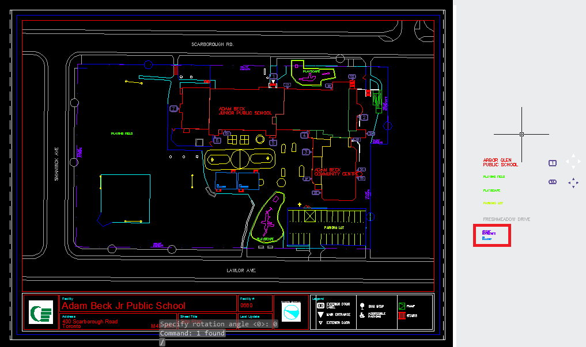

Tutorials to complete various tasks. The key to most of them: FOLLOW THE PROMPTS!
Workspace setup
- AutoCAD
- Put the "Map 3d" folder in your H:
- (1) Options (or the OPTIONS command) > (2) Files > Support File Search Path, add the folder "2 Code Library\lisp" (3) to this list. "2 Code Library\lisp\Original Site Plan Lisp" no longer is mandatory to get everything to work, although it is still documented.

- You can ignore the following lisp files still included in the top folder:
- exportrooms(old)
- findvertex
- testpoint
- testssorder
- catch22
- cmd
- Now any new drawing will open with all the lisp correctly loaded, so if a drawing is currently open, close and reopen it
- To load new lisp files, drag and drop onto the window or use the LOAD command, or add into acaddoc.lsp as another (load "filename") statement
- To add a custom menu, run the CUI command and add LISP.cuix to the list of partial customization files

- Sublime Text
- An installation of Sublime Text 3 is included in this folder. It comes preinstalled with a few packages I found useful (explore them yourself)
- It comes pre-configured with a keyboard shortcut to generate documentation (alt+d), and run the current powershell script (alt+r)
Site Plan Alignment
Site Monument Number Labelling
Checklist document: Site Plan Checklist.xlsm
- Make sure you read the prompts, they'll tell you what to do most of the time. Note: this erases all monument ids at the beginning, so if you cancel the SMN command you'll have to run it all over again. Instead, complete the command and use LABELLAYER to redo the messed up layer.
- Landscape and parking
- Go to the model tab and switch to the "tdsb-smsc-landscape" layer
- Using the BO command, add landscape polylines wherever there is lawn or trees. It is useful to add the ESRI map at this point
- Switch to the "tdsb-smsc-parking points" layer, and add parking points, if any are missing. Use the midpoint (MPO) command to add points midway between parking lines
- First Check for common errors. Most of these will no longer be relevant, but check anyway. Missing features can be seen on the ESRI background map.
- Ensure no accessible parking spot labels are missing
- Check for missing parking hatch. Add and explode ANSI 31, usually size 6 or 8
- Add missing soccer posts
- Run FIXCIRCLES (or FC) to remove circles and replace them with polylines
- Replace portables and basketball nets with the new block (should already be done)
- Add any missing fence gates
- Add missing solar panels
- Explode any unexploded blocks
- Monument Numbers
- Sometimes, soccer fields and baseball diamonds are not clearly defined. However, each pair of goal posts needs a field surrounding it. Add these "hidden" soccer fields (on "tdsb-smsc-playground soccerfield 2") and baseball diamonds (on "tdsb-smsc-playground baseball diamond 2"). Start with a rectangle and use BO to keep them from overlapping existing objects
- Run the site monument numbers command, SMN. It will automatically label some objects. Others will require manual input, like drawing a line through the objects in the order they should be labelled. Documentation on the tasks for each layer follows this section
- Table of layers and functions.
tdsb-smsc-accessibility green pg id_by_hand tdsb-smsc-building canopy helper2 tdsb-smsc-building outline id_by_hand tdsb-smsc-building parapet lines helper2 tdsb-smsc-fence id_layer tdsb-smsc-gate id_layer tdsb-smsc-landscape id_forest tdsb-smsc-misc id_by_hand tdsb-smsc-parking points id_by_line_child_parking tdsb-smsc-playground baseball diamond id_field tdsb-smsc-playground baseball fence id_layer_child tdsb-smsc-playground basketball id_layer tdsb-smsc-playground funnelball id_layer tdsb-smsc-playground outline id_by_line tdsb-smsc-playground playscape id_layer_child tdsb-smsc-playground soccerfield id_field tdsb-smsc-playground soccerpost id_soccer_posts tdsb-smsc-police safety plan label_entrance tdsb-smsc-property line id_by_hand tdsb-smsc-road id_by_hand tdsb-smsc-walkway id_by_line tdsb-smsc-building outline id_by_hand tdsb-smsc-property line id_by_hand tdsb-smsc-building parapet lines helper2 tdsb-smsc-building canopy helper2 tdsb-smsc-road id_by_hand tdsb-smsc-accessibility green pg id_by_hand tdsb-smsc-misc id_by_hand tdsb-smsc-parking points id_by_line_child_parking tdsb-smsc-fence id_layer tdsb-smsc-gate id_layer tdsb-smsc-playground basketball id_layer tdsb-smsc-playground funnelball id_layer tdsb-smsc-playground baseball diamond id_field tdsb-smsc-playground baseball fence id_layer_child tdsb-smsc-playground soccerfield id_field tdsb-smsc-playground soccerpost id_soccer_posts tdsb-smsc-landscape id_forest tdsb-smsc-walkway id_by_line tdsb-smsc-playground outline id_by_line tdsb-smsc-playground playscape id_layer_child tdsb-smsc-police safety plan label_entrance - id_by_hand
The user will be asked to id individually, selecting the objects in order. The user may be asked to choose which label applies to each object before selecting the object. If there are more objects on the layer than should be labelled, enter "[D]one" when satisfied, to continue to the next layer.
- helper2
See the next section, "Roof Plan", for documentation. Disabled in SMN, run through the ROOF command.
- id_by_line_child_parking
Operation is identical to id_by_line, but does stuff different behind the scenes.
- id_layer
This will be done automatically.
- id_layer_child
This will be done automatically.
- id_field
This only applies to soccer fields and baseball diamonds. They will be labelled automatically by distance, and it will also label the "soccerfield 2" and "baseball diamond 2" layers.
- id_soccer_posts
This will be done automatically.
- id_forest
This will label the landscape layer. The command will ask if there are forested areas. If there are, it will go through each area individually to ask if it's a forest. If there are none, it will do its work automatically.
- id_by_line
This will ask the user to enter P to draw a path or S to skip this line. This will usually delete whatever line was selected as a path, so be careful. The path defines the order that the objects will be labelled. Each point is assigned to the closest section of path beside it, and
- id_layer_child
This works the same as id_by_line, but will only labels within polygons.
- label_entrance
This works automatically, but has trouble functioning. The labels are on different elevations when added to the drawing. This causes trouble AND the labels are offset from their proper positions when it's fixed. This is disabled for now.
- id_by_hand
- Roof Plan
- Find printed drawing of the site plan. This drawing should already have coloured lines to indicate in which year each roof section was added
- Run ROOF command
- Click "Select Objects". This will request a series of selections. Each selection will be coloured a new colour, and represents each new addition to the roof. If anything is selected by accident, cancel the command and run ROOF again. This will restart the process and nothing will be harmed. After all known sections have been coloured, press return with nothing selected, then select all sections where the year built is unknown (They will be labelled as section "X")
- Click "Begin Labelling". Select the polylines in section A clockise, starting at the main entrance (see the highlighted drawing). This will add text in the center of the object, and will add the correct monument id to the roof section. "u" will undo, "b" will go back to the previous label, and "return" will move to the next one. Follow the on screen instructions to label section A, B, C and so on. Cancelling the command at this point is ok too. If ROOF is run again, the colours will stay and you can start here, at f. (all old labels will be erased).
- Summary of other buttons: Export labels is no longer useful. Options is unused in the end. Fix label brings up a small dialogue. Enter the label to be fixed. It will remove that label if it is somewhere else in the drawing, but WILL NOT CHANGE the object data of the section it was labelling. You can then select the new section to attach the data to. Make sure you also re-label the original polyline too!
- Record old Roof IDs in "B08 Drawings\ArcGIS\RoofHub.xlsm". Using the physical drawing, fill out the table with the old and new roof ids for each section
- Record new ids in "id number" column. "RoofMonNum" will be automatically filled. Write it in the same line as the corresponding old id, already recorded in the "Roof Section" column
- If multiple NEW sections correspond to one OLD section, write the same new id in both rows
- If multiple OLD ids correspond to one NEW one, duplicate the old id line add the corresponding new id to both lines
- If no OLD section corresponds to the NEW one, add a new line with the correct site id and school name
- If no NEW section coressponds to an OLD one, leave the line blank
- Check for polyface mesh/2d polylines. Run RFC to remove them. These won't be labelled properly in the next few steps, so replace them with normal polylines. An ouput of "nil" from RFC means there were none, and you can move on.
Troubleshooting: Sometimes the label text will not be added. This is normal, don't worry about it. If you really want the text, inspect the polyline for why the REGION command wouldn't work properly (self-intersection, not closed, etc). - Label both 8.5x11 and 11x17 layouts
- Find the original site plan layout pdf in the Master folder, and open it for reference
- Turn on all layers
- Delete "raster image", "site", and "facility footprint" layers (which may not exist)
- Turn off the "labeltext..." layer
- Run command UPDATELAYERS/UPLAY
- 8.5x11. It should already contain the title block
- Unlock display, move to model space in the viewport,
- Zoom so you can see the school
- Type DVIEW, ALL, return, TWIST, to rotate the view of the school
- Rotate school into place, rotating to make the school vertical/horizontal, to match the original site plan
- Pan and zoom the school to maximize its size in the viewport. It's ok to cut off roads, but make sure the entire property line is visible. If in doubt, mirror the original site plan
- Run or click "insert labels" button to add property line and portable labels to the legend

- Label all objects
- Copy all objects to clipboard, using "ctrl+c" or COPYCLIP. Not the COPY command
- Fill out the title block, and rotate the north arrow to the correct orientation. The angle is the same as the angle the viewport was rotated with dview. Running dview>twist again will show you the angle
- 11x17
- Site plan checklist has some different information for a more manual way of copying to 11x17, ignore that unless you enjoy inefficiency
- Run COPYADDR. It will copy the title block contents automatically into the 11x17 layout
- Paste the labels into the 11x17 layout, beside the layout somewhere (don't put them on top yet)
- Move, zoom, and rotate (with DVIEW) the 11x17 layout into place, just like with the 8.5x11 layout
- Select all the pasted labels and run SCNMOVE, which will scale the labels to match the 11x17 zoom level. This will not scale the labels, only the space between them, as they are a standard size
- Select all the newly scaled labels and move into place on top of the viewport
- Record the angle in "B08 Drawings\ArcGIS\Orientation.xlsx"
- Portables
- Add portable IDs by hand. Or fix my script to do it for you, but it's a bit of a pain and probably unreliable
- Final check, then move the drawing to the completed folder. A note about folder structure: each folder contains a sub folder for the next step. I found it most efficient to do step 1 for each drawing, move them to the next subfolder, and then do step 2, but it's up to you
Floor Plan Cleanup
Room IDs
- Run aexr. This should automatically label the room and everything
- Move and Align all drawings
- Run CHGUNITS
- Set coordinate systems in both the drawing and the plugin
- Open ESRI image
- If not first floor, xref any lower floor into the drawing
- Align to lower floor or ESRI image
Troubleshooting: if a lower floor imports in the wrong location, and the coordinate system AND units are set correctly in both, then I don't know what's wrong, and put the school into the "Problems" folder. - Move into "edited by Noah" (if there was no problem)
- Run script in "sort files.ps1"
- Mergecad drawings into floor_X files from sub folders
- Remove drawings from subfolders back into "edited by Noah"
- Run script in "SortToRedraw.ps1", filters files that are in the redraw process (they can be ignored)
- Run script in "next folder.ps1", copies files that have the same name into their proper places in "Record Drawing Master Files"
- Uncomment Manual Move section in "next folder.ps1" to help manually check each remaining school in "edited by Noah"
Troubleshooting: it may find polyface meshes. If this is the case it will warn you and ask you to check what it's done. The script tries to replace polyface meshes with polylines, but the vertices are NEVER in the right order. It may be wise to check for them before you run the lisp.
Merge Drawings
If you want to merge some drawings together, use either MERGECAD or MERGEFLOORS. MERGEFLOORS sorts the drawings into layers based on their file names. REPLACECAD will replace same-named drawings (only checks first six characters of the name (site id and floor number)).
Accessibility Geocoding
Automatically align accessibility floor plan to the sdf floor plan. Requires lots of manual input to ensure quality alignment.
- Run "nextfolder_noreplace.ps1". This will open two folders on the second monitor, and will advance through each folder in the master folder, opening the drawings you need
 Suggested window layout. 1 AutoCAD Map 3d; 2 Accessibility drawing folder; 3 Powershell console; 4 SDF folder for current schoool (automatically opened); 5 Floor plans for current school (automatically opened)
Suggested window layout. 1 AutoCAD Map 3d; 2 Accessibility drawing folder; 3 Powershell console; 4 SDF folder for current schoool (automatically opened); 5 Floor plans for current school (automatically opened) - Open the sdf and floor plan of the first floor
- Run COPYACCESS on the floor plan document
- Close the floor plan document without saving, just in case
- Run PASTEACCESS on the sdf
- It should automatically align and save as a new accessibility drawing in Record Drawing Master Files\\0000 sdf\\Accessibility
Troubleshooting:AutoCAD may freeze up and not work with certain drawings. Don't bother troubleshooting, just give up and do it by hand.
Documentation
To add your own documentation to other files
- Lisp
- You can describe the .lsp file at the top of the code. Anything after the first blank line will not be included in this general description. If the word "ignore" is anywhere in the description, the file will be ignored
- For each function, use these headers, each on their own line:
- Description:
- Arguments:
- Returns:
- "Description:" can be followed by any number of lines, and is the only mandatory section for documentation to appear
- "Arguments:" should be followed by each argument on a new line, followed by a colon and their description.(e.g. "foo: this is the foo argument")
- "Returns:" is unique and should be followed by text on its own line. Only text on the same line as "Returns: " will be shown in the documentation.
- Powershell: Add comments to the top of the document. Comments written after the first line of code will not be added
- Processes: Directly edit the html. Not ideal but easy enough
- After all comments are written, press alt+d in sublime text, to automatically run the documentation generation script
Tips
If you want to run batchlisp on the TDSBSHARE drive, you have to map a network drive to be able to see it!